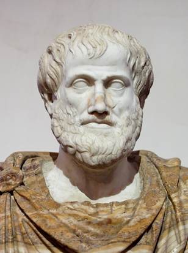
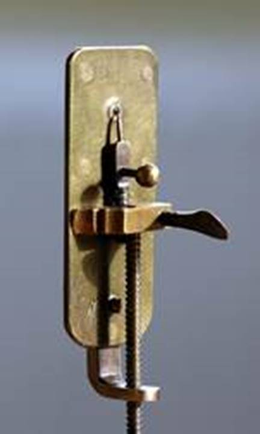

Возникновение зоологии
В прошлом году вы изучили основы ботаники – науки о растениях. Сейчас мы приступаем к изучению зоологии. Зоология – отрасль биологии, изучающая животных. Однако человечество начало накапливать знания о животных ещё задолго до формирования биологии и науки вообще. Ещё до появления письменности люди изображали в наскальных рисунках тех животных, на которых охотились. Древние охотники, вероятно, знали не только поведение добычи, но и места её обитания, предпочитаемые корма, пути сезонных миграций. Знания наших предков накапливались и передавались из поколения в поколение. Часто знания о животных закреплялись в форме мифов, сказок. Люди совершенствовали орудия лова и добычи. Переход от охоты к скотоводству потребовал от человечества больших знаний поведения и образа жизни животных. Осваивались новые варианты использования продуктов промысла и животноводства.
Формирование зоологии. Зоология в древние и средние века
Первую попытку научного подхода к накопленным знаниям о животных предпринял известный греческий ученый Аристотель (Рис. 1) в IV в. до н. э. В своем труде «История животных» Аристотель приводит сведения о строении тела животных, их поведении и образе жизни. Наряду с правдивыми сведениями книга содержала множество мифов и небылиц. Аристотель составил первую систематическую сводку животных, так называемую «Лестницу существ». Многие из его трудов затем были использованы другими учеными и значительно дополнены. Эпоха Великих географических открытий позволила резко расширить знания о видовом составе животного мира. Изобретение книгопечатания позволило издавать научные труды и расширило круг лиц, изучающих зоологию. Использование латинского языка, основного научного языка того времени, для обозначения названий животных позволило ученым разных стран понимать друг друга, описывая животных.

Рис. 1. Аристотель (Источник)
Зоология в Новое Время.
В XVII в. Антони ван Левенгуком был изготовлен микроскоп, позволивший взглянуть на отдельные клетки и одноклеточные организмы (Рис. 2). Были открыты простейшие, которых тогда за их подвижность отнесли к животным. Несмотря на то, что сейчас простейшие выделяются в отдельное царство, традиционно их изучают зоологи. Попытки описать всех известных животных и предложить их классификацию предпринимались неоднократно. Основателем современной систематики стал Карл Линней. Его «Система Природы», впервые опубликованная в 1735 г, содержала основные принципы этой науки, которые используются до настоящего времени.

Рис. 2. Микроскоп Левенгука (Источник)
К. Линнеем было описано более 4 тыс. видов животных. Он ввел в науку систематические категории: класс, отряд, род, вид. Использование этих терминов позволило избежать путаницы. Принятое двойное название животных (родовое и видовое) позволяет однозначно определить, о ком идет речь. Например, правильное латинское название майского жука Melolontha melolontha, человека разумного – Homo sapiens. Вспомните материал из учебника для 6 класса: такие же двойные названия даны и растениям. Русскоязычные названия, в отличие от принятых латинских, часто неоднозначны. В научных работах они, как правило, не используются. Для того чтобы разобраться в огромном числе видов животных (их по разным оценкам от 1,5 до 4,5 млн), зоологи используют систематические категории, схожие с ботаническими. Основной систематической категорией в биологии является вид. Более крупные систематические категории в зоологии – это род, семейство, отряд, класс, тип, царство.
Например, рассмотрим систематическое положение карликового шимпанзе (Рис. 3):
Рис. 3. Карликовый шимпанзе (Источник)
Вид – Шимпанзе карликовый
Род – Шимпанзе
Семейство – Человекообразные обезьяны
Отряд – Приматы
Класс – Млекопитающие
Подтип – Позвоночные
Тип – Хордовые
Царство – Животные
Всё большее количество найденных ископаемых останков наводило ученых на мысль об эволюции животного мира. Благодаря изучению ископаемых животных, были описаны и воссозданы «переходные формы» между представителями некоторых классов позвоночных и доказано последовательное развитие животного мира. Зоология изучает представителей самого большого царства живых организмов – царства животных. Животные, как и растения и все другие живые организмы на Земле, состоят из клеток, растут, развиваются, размножаются, дышат и питаются. В процессе эволюции у животных сформировались и развились органы, из органов состоят системы органов, например опорно-двигательная, дыхательная, пищеварительная, выделительная. Каждый орган имеет особое строение и выполняет определенные функции.
Разделы зоологии. Связь зоологии с другими науками
В настоящее время существует очень много наук, изучающих животных, например: этология – наука о поведении животных; энтомология – о насекомых; ихтиология – о рыбах; орнитология – о птицах и т. д. Зоология имеет области пересечения со многими биологическими науками. Так, существуют, например, экология животных и генетика животных. Зоологию и географию объединяет зоогеография – наука о закономерностях распространения и распределения животных на Земле. Строением тела и отдельных органов растений, животных и человека занимается наука морфология, а их функциями – наука физиология. Морфология и физиология животных тесно связаны с зоологией.
Значение зоологических знаний
Знания, полученные в результате изучения животного мира, имеют громадное практическое значение. Так, разработаны безвредные для человека биологические методы борьбы с вредителями, эффективные методики выращивания сельскохозяйственных животных. Велики достижения зоологов в вопросах искусственного разведения и акклиматизации практически важных видов животных. За последние годы выведено много новых пород домашних и сельскохозяйственных животных, повышена их продуктивность. Особенно важной зоология выглядит, если вспомнить о том, что человек – тоже один из видов животных. Человеком как биологическим видом занимается физическая антропология. Антропогенез (Рис. 4) – часть биологической эволюции, которая привела к появлению вида Homo sapiens, – также предмет интереса антропологов.
Рис. 4. Антропогенез (Источник)
Многие особенности строения и жизнедеятельности животных изучены и используются в технике. Прикладная наука, занимающаяся применением в технике принципов организации, свойств, функций и структур живой природы, в том числе и животных, называется бионикой. Идет быстрое развитие также и других наук, соприкасающихся с зоологией, – биофизики, биохимии, молекулярной биологии и радиобиологии.
Список литературы
1. Акимушкин И. И. Мир животных. Насекомые. Пауки. Домашние животные. – М.: «Мысль», 1998
2. Акимушкин И. И. Мир животных. Птицы. Рыбы, земноводные и пресмыкающиеся. – М.: «Мысль», 1998
3. Акимушкин И. И. Мир животных. Беспозвоночные. Ископаемые животные. – М.: «Мысль», 1992
4. Акимушкин И. И. Мир животных. Млекопитающие, или звери. – М.: «Мысль», 1998
5. Жизнь Животных. Т. 1. / Под ред. Полянского Ю. И. – М.: «Просвещение», 1987
6. Жизнь Животных. Т. 2. / Под ред. Пастернак Р. К. – М.: «Просвещение», 1988
7. Жизнь Животных. Т. 3. / Под ред. Гилярова М. С., Правдина Ф. Н. – М.: «Просвещение», 1984
8. Жизнь Животных. Т. 4. / Под ред. Расса Т. С. – М.: «Просвещение», 1983
9. Жизнь Животных. Т. 5. / Под ред. Банникова А. Г. – М.: «Просвещение», 1985
10. Жизнь Животных. Т. 6. / Под ред. Ильичева В. Д., Михеева А. В. – М.: «Просвещение», 1986
11. Жизнь Животных. Т. 7. / Под ред. Соколова В. Е. – М.: «Просвещение», 1989
12. Латюшин В. В., Шапкин В. А. Биология. Животные. 7 класс. – М.: Дрофа, 2011
13. Н. И. Сонин, В. Б. Захаров. Биология. Многообразие живых организмов. Животные. 8 класс. – М.: Дрофа, 2009
Дополнительные рекомендованные ссылки на ресурсы сети Интернет
1. Экосистема (Источник).
2. Academic.ru (Источник).
3. Academic.ru (Источник).
Смотрите английскую Википедию, изучайте зоологию и английский язык одновременно!
4. Англ. Википедия (Источник).
5. Англ. Википедия (Источник).
6. Англ. Википедия (Источник).
Домашнее задание
1. Какие разделы биологии вы сможете вспомнить? Какие из них прямо или косвенно связаны с зоологией?
2. Часто можно услышать вопрос «Зачем вообще нужно изучать животных?». Что вы думаете по этому поводу?
{kind=link}